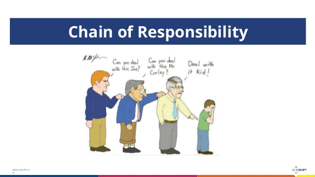
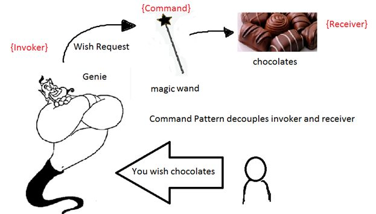

JavaScript Design Pattern
- chain of responsibility
- command
- interpreter
chain of responsibility
皮一下

UML

简单的代码理解
if () {
// do something
} else if () {
// do something
} else if () {
// do something
} else {
// do something
}
再加点oop
上代码
传送门职责链模式（Chain of responsibility）是使多个对象都有机会处理请求，从而避免请求的发送者和接受者之间的耦合关系。将这个对象连成一条链，并沿着这条链传递该请求，直到有一个对象处理他为止。
也就是说，请求以后，从第一个对象开始，链中收到请求的对象要么亲自处理它，要么转发给链中的下一个候选者。提交请求的对象并不明确知道哪一个对象将会处理它——也就是该请求有一个隐式的接受者（implicit receiver）。根据运行时刻，任一候选者都可以响应相应的请求，候选者的数目是任意的，你可以在运行时刻决定哪些候选者参与到链中。
command
皮一下
UML

上代码
传送门命令模式(Command)的定义是：用于将一个请求封装成一个对象，从而使你可用不同的请求对客户进行参数化；对请求排队或者记录请求日志，以及执行可撤销的操作。
也就是说改模式旨在将函数的调用、请求和操作封装成一个单一的对象，然后对这个对象进行一系列的处理。此外，可以通过调用实现具体函数的对象来解耦命令对象与接收对象。
interpreter
大概解释下
定义一种语言，就叫他巴啦啦语，比如里面有个9527，我有一个解释器，解释器会告诉你这个9527是什么意思。。。。
UML